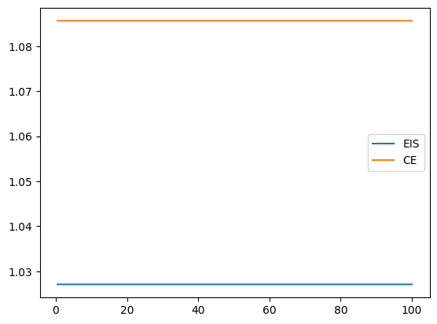

from IPython.display import Latex, display
from sympy import Rational, exp, factor, integrate, lambdify, log, oo, pi, sqrt, symbols
from sympy.printing.latex import latex
from sympy.stats import E, Normal as NormalSympy
from fastcore.test import test_close
import pandas as pd
from pyprojroot import hereSympy preamble
# symbols used
x, nu, mu, tau, sigma, eps = symbols("x nu mu tau sigma epsilon")
def show(lhs, expr):
display(Latex("$" + lhs + " = " + latex(expr) + "$"))
def gaussian_log_prob(x, mu, sigma):
return (
-1 / 2 * (x - mu) ** 2 / sigma**2 - 1 / 2 * log(2 * pi) - 1 / 2 * log(sigma**2)
)
# exponential integral of a second order polynomial
# int exp(ax^2 + bx + c) dx
# a has to be negative
def exp_int(poly, x):
a, b, c = poly.as_poly(x).all_coeffs()
return sqrt(pi / -a) * exp(b**2 / 4 / -a + c)
# second moment of importance sampling weights w.r.t. G
# for P Gaussian, G Gaussian
def rho_normal():
p = gaussian_log_prob(x, nu, tau)
g = gaussian_log_prob(x, mu, sigma)
return exp_int(2 * p - g, x)
jnp_rho_normal = lambdify((nu, tau, mu, sigma), rho_normal(), "jax")
# second moment of importance sampling weights w.r.t. G
# for P mixture of two Gaussians, G Gaussian
def rho_glmm():
p1 = gaussian_log_prob(x, nu, tau)
p2 = gaussian_log_prob(x, -nu, tau)
g = gaussian_log_prob(x, mu, sigma)
return (
1 / 4 * exp_int(2 * p1 - g, x)
+ 1 / 4 * exp_int(2 * p2 - g, x)
+ 1 / 2 * exp_int(p1 + p2 - g, x)
)
def rho_gsmm():
p1 = gaussian_log_prob(x, 0.0, 1.0)
p2 = gaussian_log_prob(x, 0.0, 1 / eps)
g = gaussian_log_prob(x, mu, sigma)
return (
1 / 4 * exp_int(2 * p1 - g, x)
+ 1 / 4 * exp_int(2 * p2 - g, x)
+ 1 / 2 * exp_int(p1 + p2 - g, x)
)
jnp_rho_glmm = lambdify((nu, tau, mu, sigma), rho_glmm(), "jax")
jnp_rho_gsmm = lambdify((eps, mu, sigma), rho_gsmm(), "jax")
test_close(jnp_rho_glmm(0, 1, 0, 1), 1.0)
test_close(jnp_rho_gsmm(1, 0, 1), 1.0)rho_gsmm().subs({mu: 0.0, sigma: 1.0}).together()\(\displaystyle \frac{0.176776695296637 \sqrt{\frac{1}{1.0 \epsilon^{2} - 0.5}}}{\left(\frac{1}{\epsilon^{2}}\right)^{1.0}} + 0.75\)
CE / EIS helpers
from jax.scipy.optimize import minimize
import jax.numpy as jnp
import jax.scipy as jsp
from tensorflow_probability.substrates.jax.distributions import (
MixtureSameFamily,
Normal,
Categorical,
)
import jax.random as jrn
import matplotlib.pyplot as plt
from jax import vmap
from functools import partial
key = jrn.PRNGKey(453523498)
def ce_mu(samples, weights):
mu = jnp.sum(samples * weights) / jnp.sum(weights)
return mu
def eis_mu(samples, weights, logp, s2):
(N,) = weights.shape
X = jnp.array([jnp.ones(N), samples / jnp.sqrt(s2)]).reshape((2, N)).T
wX = jnp.einsum("i,ij->ij", jnp.sqrt(weights), X)
logh = Normal(0, jnp.sqrt(s2)).log_prob(samples)
y = jnp.sqrt(weights) * (logp - logh)
beta = jnp.linalg.solve(wX.T @ wX, wX.T @ y)
mu = beta[1] * jnp.sqrt(s2)
return mu
def mu_ce_eis(N, key, s2, P):
key, sk = jrn.split(key)
samples = P.sample(N, sk)
weights = jnp.ones(N)
return jnp.array(
[ce_mu(samples, weights), eis_mu(samples, weights, P.log_prob(samples), s2)]
)
def ce_s2(samples, weights, mu):
s2 = jnp.sum((samples - mu) ** 2 * weights) / jnp.sum(weights)
psi = -1 / 2 / s2
return psi
def eis_s2(samples, weights, logp, mu):
(N,) = weights.shape
X = jnp.array([jnp.ones(N), (samples - mu) ** 2]).T
wX = jnp.einsum("i,ij->ij", jnp.sqrt(weights), X)
y = jnp.sqrt(weights) * logp
beta = jnp.linalg.solve(wX.T @ wX, wX.T @ y)
# s2 = -1 / 2 / beta[2]
return beta[2]
def s2_ce_eis(N, key, mu, P):
key, sk = jrn.split(key)
samples = P.sample(N, sk)
weights = jnp.ones(N)
return jnp.array(
[ce_s2(samples, weights, mu), eis_s2(samples, weights, P.log_prob(samples), mu)]
)s2 = 2
tau2 = 1
N = int(1e3)
N_var = int(1e3)
def vars(N, key, s2):
vars = vmap(partial(mu_ce_eis, N=N, s2=s2, P=Normal(0, jnp.sqrt(tau2))))(
key=jrn.split(subkey, N_var)
).var(axis=0)
a = 1 / 2 * (jnp.log(s2) - jnp.log(tau2))
b = 1 / 2 * (1 / s2 - 1 / tau2)
# gamma = 15 * a**2 * tau2**3 + 6 * a * b * tau2**2 + b**2 * tau2
gamma = 10 * b**2 * tau2**3 # * 5 * tau2
# vars[1] / vars[0], s2**2 / tau2**3 * gamma
var_eis_fct = (N * vars[1] / s2) / (s2 / tau2**2 * gamma)
var_ce_fct = (N * vars[0] / s2) / (tau2 / s2)
return var_eis_fct, var_ce_fct
s2s = jnp.linspace(0.5, 100, 30)
key, subkey = jrn.split(key)
vars_eis, vars_ce = vmap(partial(vars, N=N, key=key))(s2=s2s)
plt.plot(s2s, vars_eis, label="EIS")
plt.plot(s2s, vars_ce, label="CE")
plt.legend()
plt.show()
(
(
(s2 - tau2) ** 2
/ (2 * s2 * tau2) ** 2
* (15 * tau2**3 - 6 * tau2**3 * s2 + tau2**3 * s2**2)
)
* s2**2
/ tau2**3
)1.75Plotting
import matplotlib as mpl
mpl.rcParams["figure.figsize"] = (14, 6)
mpl.rcParams["text.usetex"] = True
mpl.rcParams["text.latex.preamble"] = r"\usepackage{amsmath}" # for \text commandExample 3.3 (univariate Gaussian, \(\mu\) fixed)
\(\providecommand{\P}{\mathbf P}\) For the asymptotic variance of EIS: \[ \mathbf P \left( \left( \operatorname{id} - \mu \right)^{4} \left( \operatorname{id}^{2} \underbrace{\left( -\frac{1}{2\tau^{2}} - \psi\right)}_{=a} - \tau^{2} \left(-\frac{1}{2\tau^{2}} - \psi \right) \right)^2 \right) = a^{2} \mathbf P \left( \left( \operatorname{id} - \mu \right)^{4} \left( \operatorname{id}^{2} - \tau^{2} \right)^{2} \right) \] for \(\mathbf P = \mathcal N (0,\tau^{2})\)
CE
X = NormalSympy("x", 0, tau) # X ~ P
T = (X - mu) ** 2
ET = E(T)
Cov_T = (E(T**2) - ET**2).simplify()
# display(Latex("$\\mathbf P T$"))
show("\\mathbf P T", ET)
show("\\text{Cov} (T)", Cov_T)
# CE
psie_ce_normal_variance = -1 / (2 * (tau**2 + mu**2))
show("\\psi_{\\text{CE}}", psie_ce_normal_variance)
I_ce = 1 / (2 * psie_ce_normal_variance**2)
show("I(\\psi)", I_ce)
B_ce = 1 / I_ce
show("\\mathbf B_{\\text{CE}}", B_ce)
M_ce = Cov_T
show("\\mathbf M_{\\text{CE}}", M_ce)
V_ce = B_ce * M_ce * B_ce
show("V_{\\text{CE}}", V_ce)
psi_ce_normal_variance_fun = lambdify((mu, tau), psie_ce_normal_variance, "jax")\(\mathbf P T = \mu^{2} + \tau^{2}\)
\(\text{Cov} (T) = 2 \tau^{2} \left(2 \mu^{2} + \tau^{2}\right)\)
\(\psi_{\text{CE}} = - \frac{1}{2 \mu^{2} + 2 \tau^{2}}\)
\(I(\psi) = \frac{\left(2 \mu^{2} + 2 \tau^{2}\right)^{2}}{2}\)
\(\mathbf B_{\text{CE}} = \frac{2}{\left(2 \mu^{2} + 2 \tau^{2}\right)^{2}}\)
\(\mathbf M_{\text{CE}} = 2 \tau^{2} \left(2 \mu^{2} + \tau^{2}\right)\)
\(V_{\text{CE}} = \frac{8 \tau^{2} \left(2 \mu^{2} + \tau^{2}\right)}{\left(2 \mu^{2} + 2 \tau^{2}\right)^{4}}\)
EIS
logp = -Rational(1 / 2) * X**2 / tau**2
CovT_logp = E((T - ET) * (logp - E(logp)))
show("\\text{Cov}(T, \\log p)", CovT_logp)
psi_eis_normal_variance = 1 / Cov_T * CovT_logp
show("\\psi_{\\text{EIS}}", psi_eis_normal_variance)
a = -1 / 2 / tau**2 - psi_eis_normal_variance
# integral = E((X-mu)** 4 * (X**2 - tau**2)**2)
logw = -Rational(1 / 2) * X**2 / tau**2 - psi_eis_normal_variance * T
M_eis = E((X - mu) ** 4 * (logw - E(logw)) ** 2) # a ** 2 * integral
nu = 3 * tau**4
B_eis = 1 / Cov_T
show("B_{\\text{EIS}}", factor(B_eis.simplify()))
show("M_{\\text{EIS}}", factor(M_eis.simplify()))
V_eis = B_eis * M_eis * B_eis
show("V_{\\text{EIS}}", factor(V_eis.simplify()))
psi_eis_normal_variance_fun = lambdify((mu, tau), psi_eis_normal_variance, "jax")\(\text{Cov}(T, \log p) = - \tau^{2}\)
\(\psi_{\text{EIS}} = - \frac{1}{2 \left(2 \mu^{2} + \tau^{2}\right)}\)
\(B_{\text{EIS}} = \frac{1}{2 \tau^{2} \left(2 \mu^{2} + \tau^{2}\right)}\)
\(M_{\text{EIS}} = \frac{\mu^{2} \left(2 \mu^{6} + 45 \mu^{4} \tau^{2} + 15 \tau^{6}\right)}{\left(2 \mu^{2} + \tau^{2}\right)^{2}}\)
\(V_{\text{EIS}} = \frac{\mu^{2} \left(2 \mu^{6} + 45 \mu^{4} \tau^{2} + 15 \tau^{6}\right)}{4 \tau^{4} \left(2 \mu^{2} + \tau^{2}\right)^{4}}\)
Data
parameters
tau2 = 1.0
s2s = jnp.linspace(0.5 * tau2, 3.0 * tau2, 51)
omega2s = jnp.array([0.1, 0.5, 1.0])
eps2s = 1 / jnp.array([0.01, 0.1, 0.5])
mus = jnp.linspace(0, 2, 51)
omegas = jnp.sqrt(omega2s)
epss = jnp.sqrt(eps2s)
colors = plt.rcParams["axes.prop_cycle"].by_key()["color"]data/figures/are_mu.csv
N_boot = 10_000
def bootstrap_se(samples, fun, key, N_boot=N_boot):
N, *_ = samples.shape
key, sk = jrn.split(key)
resamples = jrn.choice(sk, samples, shape=(N_boot, N), replace=True)
boot_estimates = vmap(fun)(resamples)
return jnp.std(boot_estimates, axis=0)
def are(samples):
var_ce, var_eis = (samples).var(axis=0)
return var_eis / var_cedef gmm_mu(s2, omega2, N, key, M):
key, *keys = jrn.split(key, M + 1)
keys = jnp.array(keys)
P = MixtureSameFamily(
mixture_distribution=Categorical(probs=jnp.array([0.5, 0.5])),
components_distribution=Normal(jnp.array([-1.0, 1.0]), jnp.sqrt(omega2)),
)
mixture_estimators = partial(mu_ce_eis, P=P)
# return vmap(mixture_estimators, (None, 0, None))(N, keys, s2)
return jnp.array([mixture_estimators(N, k, s2) for k in keys])
def gmm_scale_mu(s2, eps2, N, key, M):
key, *keys = jrn.split(key, M + 1)
keys = jnp.array(keys)
P = MixtureSameFamily(
mixture_distribution=Categorical(probs=jnp.array([0.5, 0.5])),
components_distribution=Normal(
jnp.array([0.0, 0.0]), jnp.array([1.0, 1 / jnp.sqrt(eps2)])
),
)
mixture_estimators = partial(mu_ce_eis, P=P)
# return vmap(mixture_estimators, (None, 0, None))(N, keys, s2)
return jnp.array([mixture_estimators(N, k, s2) for k in keys])
def gmm_are_mu(s2, omega2, N, key, M):
key, sk1, sk2 = jrn.split(key, 3)
mus = gmm_mu(s2, omega2, N, sk1, M)
var_ce, var_eis = (mus).var(axis=0)
est_se = bootstrap_se(mus, are, sk2)
return var_eis / var_ce, est_se
def gmm_scale_are_mu(s2, eps2, N, key, M):
key, sk1, sk2 = jrn.split(key, 3)
mus = gmm_scale_mu(s2, eps2, N, sk1, M)
var_ce, var_eis = (mus).var(axis=0)
est_se = bootstrap_se(mus, are, sk2)
return var_eis / var_ce, est_sev_ce = tau2 / s2s
b_eis = s2s / tau2
m_eis = 5 / 2 * (tau2 / s2s) * (tau2 / s2s - 1) ** 2
v_eis = b_eis * m_eis * b_eis
are_normal = v_eis / v_ceN = 1_000
M = 400
key, subkey = jrn.split(key)are_gmm, est_se_gmm = vmap(
vmap(gmm_are_mu, (0, None, None, None, None)), (None, 0, None, None, None)
)(s2s, omega2s, N, subkey, M)are_gmm_scale, est_se_gmm_scale = vmap(
vmap(gmm_scale_are_mu, (0, None, None, None, None)), (None, 0, None, None, None)
)(s2s, eps2s, N, subkey, M)fig, axs = plt.subplots(1, 2, figsize=(14, 6))
axs[0].plot(
are_gmm.T,
)
axs[0].plot(are_gmm.T + est_se_gmm.T, "--", color="gray")
axs[0].plot(are_gmm.T - est_se_gmm.T, "--", color="gray")
axs[1].plot(
are_gmm_scale.T,
)
axs[1].plot(are_gmm_scale.T + est_se_gmm_scale.T, "--", color="gray")
axs[1].plot(are_gmm_scale.T - est_se_gmm_scale.T, "--", color="gray")
plt.show()(est_se_gmm / are_gmm).max(), (est_se_gmm_scale / are_gmm_scale).max()df_est_mu = pd.DataFrame(
{
"sigma2": s2s,
"normal": are_normal,
"GMM_omega.1": are_gmm[0],
"GMM_omega.5": are_gmm[1],
"GMM_omega1": are_gmm[2],
"GMM_scale_eps2.01": are_gmm_scale[0],
"GMM_scale_eps2.1": are_gmm_scale[1],
"GMM_scale_eps2.5": are_gmm_scale[2],
}
)
df_est_mu.to_csv(here("data/figures/are_mu.csv"), index=False)plt.plot(s2s, are_normal, label="$\\mathcal N (0,1)$", color=colors[0])
plt.plot(s2s, are_gmm[0], label="loc. mixture, $\\omega^2 = .1$", color=colors[1])
plt.plot(
s2s,
are_gmm[1],
label="loc. mixture, $\\omega^2 = .5$",
color=colors[1],
linestyle="--",
)
plt.plot(
s2s,
are_gmm[2],
label="loc. mixture, $\\omega^2 = 1.$",
color=colors[1],
linestyle=":",
)
plt.plot(
s2s,
are_gmm_scale[0],
label="scale mixture, $\\varepsilon^2 = .01$",
color=colors[2],
)
plt.plot(
s2s,
are_gmm_scale[1],
label="scale mixture, $\\varepsilon^2 = .1$",
color=colors[2],
linestyle="--",
)
plt.plot(
s2s,
are_gmm_scale[2],
label="scale mixture, $\\varepsilon^2 = .5$",
color=colors[2],
linestyle=":",
)
plt.axhline(1.0, color="black", linestyle="--")
plt.ylabel("$\\tfrac{V_{\\text{EIS}}}{V_{\\text{CE}}}$")
plt.xlabel("$\\sigma^2$")
plt.yscale("log")
plt.ylim(10**-2, 10**3)
plt.legend()
plt.show()data/figures/are_sigma2.csv
V_eis_fun = lambdify((mu, tau), V_eis, "jax")
V_ce_fun = lambdify((mu, tau), V_ce, "jax")
def gmm_s2(mu, omega2, N, key, M):
key, *keys = jrn.split(key, M + 1)
keys = jnp.array(keys)
P = MixtureSameFamily(
mixture_distribution=Categorical(probs=jnp.array([0.5, 0.5])),
components_distribution=Normal(jnp.array([-1.0, 1.0]), jnp.sqrt(omega2)),
)
mixture_estimators = partial(s2_ce_eis, P=P)
return vmap(mixture_estimators, (None, 0, None))(N, keys, mu)
def gmm_scale_s2(mu, eps2, N, key, M):
key, *keys = jrn.split(key, M + 1)
keys = jnp.array(keys)
P = MixtureSameFamily(
mixture_distribution=Categorical(probs=jnp.array([0.5, 0.5])),
components_distribution=Normal(
jnp.array([0.0, 0.0]), jnp.array([1.0, 1 / jnp.sqrt(eps2)])
),
)
mixture_estimators = partial(s2_ce_eis, P=P)
return vmap(mixture_estimators, (None, 0, None))(N, keys, mu)
def gmm_are_s2(mu, omega2, N, key, M):
samples = gmm_s2(mu, omega2, N, key, M)
var_ce, var_eis = samples.var(axis=0)
est_se = bootstrap_se(samples, are, key)
return var_eis / var_ce, est_se
def gmm_scale_are_s2(mu, eps2, N, key, M):
samples = gmm_scale_s2(mu, eps2, N, key, M)
var_ce, var_eis = samples.var(axis=0)
est_se = bootstrap_se(samples, are, key)
return var_eis / var_ce, est_se
veis = vmap(V_eis_fun, (0, None))(mus, 1.0)
vce = vmap(V_ce_fun, (0, None))(mus, 1.0)
are_normal = veis / vce
key, subkey = jrn.split(key)
are_gmm, se_are_gmm = vmap(
vmap(gmm_are_s2, (0, None, None, None, None)), (None, 0, None, None, None)
)(mus, omega2s, N, subkey, M)
are_gmm_scale, se_are_gmm_scale = vmap(
vmap(gmm_scale_are_s2, (0, None, None, None, None)), (None, 0, None, None, None)
)(mus, eps2s, N, subkey, M)(se_are_gmm / are_gmm).max(), (se_are_gmm_scale / are_gmm_scale).max()df_est_mu = pd.DataFrame(
{
"mu": mus,
"normal": are_normal,
"GMM_omega.1": are_gmm[0],
"GMM_omega.5": are_gmm[1],
"GMM_omega1": are_gmm[2],
"GMM_scale_eps2.01": are_gmm_scale[0],
"GMM_scale_eps2.1": are_gmm_scale[1],
"GMM_scale_eps2.5": are_gmm_scale[2],
}
)
df_est_mu.to_csv(here("data/figures/are_sigma2.csv"), index=False)plt.plot(mus, are_gmm[0], label="loc. mixture, $\\omega^2 = .1$", color=colors[1])
plt.plot(
mus,
are_gmm[1],
label="loc. mixture, $\\omega^2 = .5$",
color=colors[1],
linestyle="--",
)
plt.plot(
mus,
are_gmm[2],
label="loc. mixture, $\\omega^2 = 1.$",
color=colors[1],
linestyle=":",
)
plt.plot(
mus,
are_gmm_scale[0],
label="scale mixture, $\\varepsilon^2 = .01$",
color=colors[2],
)
plt.plot(
mus,
are_gmm_scale[1],
label="scale mixture, $\\varepsilon^2 = .1$",
color=colors[2],
linestyle="--",
)
plt.plot(
mus,
are_gmm_scale[2],
label="scale mixture, $\\varepsilon^2 = .5$",
color=colors[2],
linestyle=":",
)
plt.axhline(1.0, color="black", linestyle="--")
plt.ylabel("$\\frac{V_{\\text{EIS}}}{V_{\\text{CE}}}$")
plt.xlabel("$\\mu$")
plt.ylim(10**-2, 10**2)
plt.yscale("log")
plt.legend()
plt.show()data/figures/{rho_cem_sigma2,cem_sigma2,rho_eis_sigma2,eis_sigma2}.csv
vv_gmm_s2 = vmap(vmap(gmm_s2, (0, None, None, None, None)), (None, 0, None, None, None))
vv_gmm_scale_s2 = vmap(
vmap(gmm_scale_s2, (0, None, None, None, None)), (None, 0, None, None, None)
)
psi_ces = jnp.array(
[
-1 / 2 / (tau2 + mus**2), # normal
*vv_gmm_s2(mus, omega2s, 100_000, subkey, 1).mean(axis=-2)[
:, :, 0
], # loc. mixture
*vv_gmm_scale_s2(mus, eps2s, 100_000, subkey, 1).mean(axis=-2)[
:, :, 0
], # scale mixture
]
)
# sigma2_normal_ces = -1/2/psi_ces
# rho_ce_normal = vmap(jnp_rho_normal, (None, None, 0,0))(0., 1., mus, jnp.sqrt(sigma2_normal_ces))
# rho_gmm = vmap(
# vmap(jnp_rho_gmm, (None, None, 0,0)),
# (None, 0, None, None)
# )(0., 1., mus, jnp.sqrt(sigma2_normal_ces))
sigma_ces = jnp.sqrt(-1 / 2 / psi_ces)
# fix simga CE for mu = 0 (estimation error leads to invalid proposals)
sigma_ces = sigma_ces.at[4:, 0].set(jnp.sqrt(1 / 2 + 1 / 2 / eps2s))
rho_ces_sigma2 = jnp.array(
[
vmap(jnp_rho_normal, (None, None, 0, 0))(0.0, tau2, mus, sigma_ces[0]),
vmap(jnp_rho_glmm, (None, None, 0, 0))(1.0, omegas[0], mus, sigma_ces[1]),
vmap(jnp_rho_glmm, (None, None, 0, 0))(1.0, omegas[1], mus, sigma_ces[2]),
vmap(jnp_rho_glmm, (None, None, 0, 0))(1.0, omegas[2], mus, sigma_ces[3]),
vmap(jnp_rho_gsmm, (None, 0, 0))(epss[0], mus, sigma_ces[4]),
vmap(jnp_rho_gsmm, (None, 0, 0))(epss[1], mus, sigma_ces[5]),
vmap(jnp_rho_gsmm, (None, 0, 0))(epss[2], mus, sigma_ces[6]),
]
)psi_eiss_sigma2 = jnp.array(
[
-1 / 2 / (tau2 + 2 * mus**2), # normal
*vv_gmm_s2(mus, omega2s, 100_000, subkey, 1).mean(axis=-2)[
:, :, 1
], # loc. mixture
*vv_gmm_scale_s2(mus, eps2s, 1000_00, subkey, 1).mean(axis=-2)[
:, :, 1
], # scale mixture
]
)
sigma_eiss = jnp.sqrt(-1 / 2 / psi_eiss_sigma2)
rho_eiss_sigma2 = jnp.array(
[
vmap(jnp_rho_normal, (None, None, 0, 0))(0.0, tau2, mus, sigma_eiss[0]),
vmap(jnp_rho_glmm, (None, None, 0, 0))(1.0, omegas[0], mus, sigma_eiss[1]),
vmap(jnp_rho_glmm, (None, None, 0, 0))(1.0, omegas[1], mus, sigma_eiss[2]),
vmap(jnp_rho_glmm, (None, None, 0, 0))(1.0, omegas[2], mus, sigma_eiss[3]),
vmap(jnp_rho_gsmm, (None, 0, 0))(epss[0], mus, sigma_eiss[4]),
vmap(jnp_rho_gsmm, (None, 0, 0))(epss[1], mus, sigma_eiss[5]),
vmap(jnp_rho_gsmm, (None, 0, 0))(epss[2], mus, sigma_eiss[6]),
]
)df_rho_cem_sigma2 = pd.DataFrame(
{
"mu": mus,
"normal": rho_ces_sigma2[0],
"GMM_omega.1": rho_ces_sigma2[1],
"GMM_omega.5": rho_ces_sigma2[2],
"GMM_omega1": rho_ces_sigma2[3],
"GMM_scale_eps.01": rho_ces_sigma2[4],
"GMM_scale_eps.1": rho_ces_sigma2[5],
"GMM_scale_eps.5": rho_ces_sigma2[6],
}
)
df_rho_cem_sigma2.to_csv(here("data/figures/rho_cem_sigma2.csv"), index=False)
df_cem_sigma2_est = pd.DataFrame(
{
"mu": mus,
"normal": sigma_ces[0] ** 2,
"GMM_omega.1": sigma_ces[1] ** 2,
"GMM_omega.5": sigma_ces[2] ** 2,
"GMM_omega1": sigma_ces[3] ** 2,
"GMM_scale_eps.01": sigma_ces[4] ** 2,
"GMM_scale_eps.1": sigma_ces[5] ** 2,
"GMM_scale_eps.5": sigma_ces[6] ** 2,
}
)
df_cem_sigma2_est.to_csv(here("data/figures/cem_sigma2.csv"), index=False)
df_rho_eis_sigma2 = pd.DataFrame(
{
"mu": mus,
"normal": rho_eiss_sigma2[0],
"GMM_omega.1": rho_eiss_sigma2[1],
"GMM_omega.5": rho_eiss_sigma2[2],
"GMM_omega1": rho_eiss_sigma2[3],
"GMM_scale_eps.01": rho_eiss_sigma2[4],
"GMM_scale_eps.1": rho_eiss_sigma2[5],
"GMM_scale_eps.5": rho_eiss_sigma2[6],
}
)
df_rho_eis_sigma2.to_csv(here("data/figures/rho_eis_sigma2.csv"), index=False)
df_eis_sigma2_est = pd.DataFrame(
{
"mu": mus,
"normal": sigma_eiss[0] ** 2,
"GMM_omega.1": sigma_eiss[1] ** 2,
"GMM_omega.5": sigma_eiss[2] ** 2,
"GMM_omega1": sigma_eiss[3] ** 2,
"GMM_scale_eps.01": sigma_eiss[4] ** 2,
"GMM_scale_eps.1": sigma_eiss[5] ** 2,
"GMM_scale_eps.5": sigma_eiss[6] ** 2,
}
)
df_eis_sigma2_est.to_csv(here("data/figures/eis_sigma2.csv"), index=False)plt.plot(
mus, rho_ces_sigma2[1], label="loc. mixture, $\\omega^2 = .1$", color=colors[1]
)
plt.plot(
mus,
rho_ces_sigma2[2],
label="loc. mixture, $\\omega^2 = .5$",
color=colors[1],
linestyle="--",
)
plt.plot(
mus,
rho_ces_sigma2[3],
label="loc. mixture, $\\omega^2 = 1.$",
color=colors[1],
linestyle=":",
)
plt.plot(
mus,
rho_ces_sigma2[4],
label="scale mixture, $\\varepsilon^2 = .01$",
color=colors[2],
)
plt.plot(
mus,
rho_ces_sigma2[5],
label="scale mixture, $\\varepsilon^2 = .1$",
color=colors[2],
linestyle="--",
)
plt.plot(
mus,
rho_ces_sigma2[6],
label="scale mixture, $\\varepsilon^2 = .5$",
color=colors[2],
linestyle=":",
)
plt.ylabel("$\\rho$")
plt.xlabel("$\\mu$")
# plt.ylim(10**-2, 10**2)
# plt.yscale("log")
plt.legend()
# tikzplotlib.save("../tikz/are_mu.tex")
plt.show()
plt.plot(mus, rho_eiss_sigma2[0], label="$\\mathcal N (0,1)$", color=colors[0])
plt.plot(
mus, rho_eiss_sigma2[1], label="loc. mixture, $\\omega^2 = .1$", color=colors[1]
)
plt.plot(
mus,
rho_eiss_sigma2[2],
label="loc. mixture, $\\omega^2 = .5$",
color=colors[1],
linestyle="--",
)
plt.plot(
mus,
rho_eiss_sigma2[3],
label="loc. mixture, $\\omega^2 = 1.$",
color=colors[1],
linestyle=":",
)
plt.plot(
mus,
rho_eiss_sigma2[4],
label="scale mixture, $\\varepsilon^2 = .01$",
color=colors[2],
)
plt.plot(
mus,
rho_eiss_sigma2[5],
label="scale mixture, $\\varepsilon^2 = .1$",
color=colors[2],
linestyle="--",
)
plt.plot(
mus,
rho_eiss_sigma2[6],
label="scale mixture, $\\varepsilon^2 = .5$",
color=colors[2],
linestyle=":",
)
plt.ylabel("$\\rho$")
plt.xlabel("$\\mu$")
# plt.ylim(10**-2, 10**2)
# plt.yscale("log")
plt.legend()
# tikzplotlib.save("../tikz/are_mu.tex")
plt.show()relative_rho = rho_eiss_sigma2 / rho_ces_sigma2
plt.plot(mus, relative_rho[0], label="$\\mathcal N (0,1)$", color=colors[0])
plt.plot(mus, relative_rho[1], label="loc. mixture, $\\omega^2 = .1$", color=colors[1])
plt.plot(
mus,
relative_rho[2],
label="loc. mixture, $\\omega^2 = .5$",
color=colors[1],
linestyle="--",
)
plt.plot(
mus,
relative_rho[3],
label="loc. mixture, $\\omega^2 = 1.$",
color=colors[1],
linestyle=":",
)
plt.plot(
mus, relative_rho[4], label="scale mixture, $\\varepsilon^2 = .01$", color=colors[2]
)
plt.plot(
mus,
relative_rho[5],
label="scale mixture, $\\varepsilon^2 = .1$",
color=colors[2],
linestyle="--",
)
plt.plot(
mus,
relative_rho[6],
label="scale mixture, $\\varepsilon^2 = .5$",
color=colors[2],
linestyle=":",
)
plt.ylabel("$\\rho_{\\text{EIS}} / \\rho_{\\text{CE}}$")
plt.xlabel("$\\mu$")
plt.axhline(1.0, color="black", linestyle="--")
# plt.ylim(10**-2, 10**2)
# plt.yscale("log")
plt.legend()
# tikzplotlib.save("../tikz/are_mu.tex")
plt.show()data/figures/rho_mu.csv: \(\rho\) for fixed \(\sigma^2\)
in this case \(\mu = 0\) for both CEM and EIS
# sigma2_normal_ces = -1/2/psi_ces
# rho_ce_normal = vmap(jnp_rho_normal, (None, None, 0,0))(0., 1., mus, jnp.sqrt(sigma2_normal_ces))
# rho_gmm = vmap(
# vmap(jnp_rho_gmm, (None, None, 0,0)),
# (None, 0, None, None)
# )(0., 1., mus, jnp.sqrt(sigma2_normal_ces))
rho_mu = jnp.array(
[
vmap(jnp_rho_normal, (None, None, None, 0))(0.0, tau2, 0.0, jnp.sqrt(s2s)),
vmap(jnp_rho_glmm, (None, None, None, 0))(1.0, omegas[0], 0.0, jnp.sqrt(s2s)),
vmap(jnp_rho_glmm, (None, None, None, 0))(1.0, omegas[1], 0.0, jnp.sqrt(s2s)),
vmap(jnp_rho_glmm, (None, None, None, 0))(1.0, omegas[2], 0.0, jnp.sqrt(s2s)),
vmap(jnp_rho_gsmm, (None, None, 0))(epss[0], 0.0, jnp.sqrt(s2s)),
vmap(jnp_rho_gsmm, (None, None, 0))(epss[1], 0.0, jnp.sqrt(s2s)),
vmap(jnp_rho_gsmm, (None, None, 0))(epss[2], 0.0, jnp.sqrt(s2s)),
]
)
df_rho_mu = pd.DataFrame(
{
"sigma2": s2s,
"normal": rho_mu[0],
"GMM_omega.1": rho_mu[1],
"GMM_omega.5": rho_mu[2],
"GMM_omega1": rho_mu[3],
"GMM_scale_eps.01": rho_mu[4],
"GMM_scale_eps.1": rho_mu[5],
"GMM_scale_eps.5": rho_mu[6],
}
)
df_rho_mu.to_csv(here("data/figures/rho_mu.csv"), index=False)
plt.plot(s2s, rho_mu[0], label="$\\mathcal N (0,1)$", color=colors[0])
plt.plot(s2s, rho_mu[1], label="loc. mixture, $\\omega^2 = .1$", color=colors[1])
plt.plot(
s2s,
rho_mu[2],
label="loc. mixture, $\\omega^2 = .5$",
color=colors[1],
linestyle="--",
)
plt.plot(
s2s,
rho_mu[3],
label="loc. mixture, $\\omega^2 = 1.$",
color=colors[1],
linestyle=":",
)
plt.plot(s2s, rho_mu[4], label="scale mixture, $\\varepsilon.01$", color=colors[2])
plt.plot(
s2s,
rho_mu[5],
label="scale mixture, $\\varepsilon^2 = .1$",
color=colors[2],
linestyle="--",
)
plt.plot(
s2s,
rho_mu[6],
label="scale mixture, $\\varepsilon^2 = .5$",
color=colors[2],
linestyle=":",
)
plt.ylabel("$\\rho$")
plt.xlabel("$\\sigma^2$")
plt.ylim(1, 5)
plt.legend()
plt.show()data/figures/gssm_eps.csv
from functools import partial
vareps = jnp.logspace(-2, 0, 51)
are_eps, are_eps_se = vmap(partial(gmm_scale_are_s2, mu=0.0, N=N, key=subkey, M=M))(
eps2=vareps**2
)
s2_est = (
-1 / 2 / vmap(partial(gmm_scale_s2, mu=0.0, N=N, key=subkey, M=M))(eps2=vareps**2)
)s2_cem, s2_eis = jnp.nanmean(s2_est, axis=1).T
s2_cem = 1 / 2 * (1 + 1 / vareps**2)
rho_eps_cem = vmap(jnp_rho_gsmm, (0, None, 0))(vareps, 0.0, jnp.sqrt(s2_cem))
rho_eps_eis = vmap(jnp_rho_gsmm, (0, None, 0))(vareps, 0.0, jnp.sqrt(s2_eis))pd.DataFrame(
{
"epsilon": vareps,
"sigma2_cem": s2_cem,
"sigma2_eis": s2_eis,
"rho_cem": rho_eps_cem,
"rho_eis": rho_eps_eis,
"are": are_eps,
}
).to_csv(here("data/figures/gsmm_eps.csv"), index=False)vareps[jnp.argmax(1 / 2 / vareps**2 < s2_eis)]plt.plot(vareps**2, s2_cem, label="CEM")
plt.plot(vareps**2, s2_eis, label="EIS")
plt.plot(
vareps**2,
1 / 2 / vareps**2,
color="grey",
linestyle="--",
label="consistency threshold",
)
plt.axvline(vareps[jnp.argmax(1 / 2 / vareps**2 < s2_eis)] ** 2)
plt.legend()
plt.yscale("log")
plt.xscale("log")plt.plot(vareps**2, are_eps)
plt.xscale("log")plt.plot(vareps**2, 1 / rho_eps_cem * 100, label="CEM")
plt.plot(vareps**2, 1 / rho_eps_eis * 100, label="EIS")
plt.xscale("log")
plt.legend()
plt.ylabel("EF [\\%]")
plt.xlabel("$\\varepsilon^2$")
plt.show()